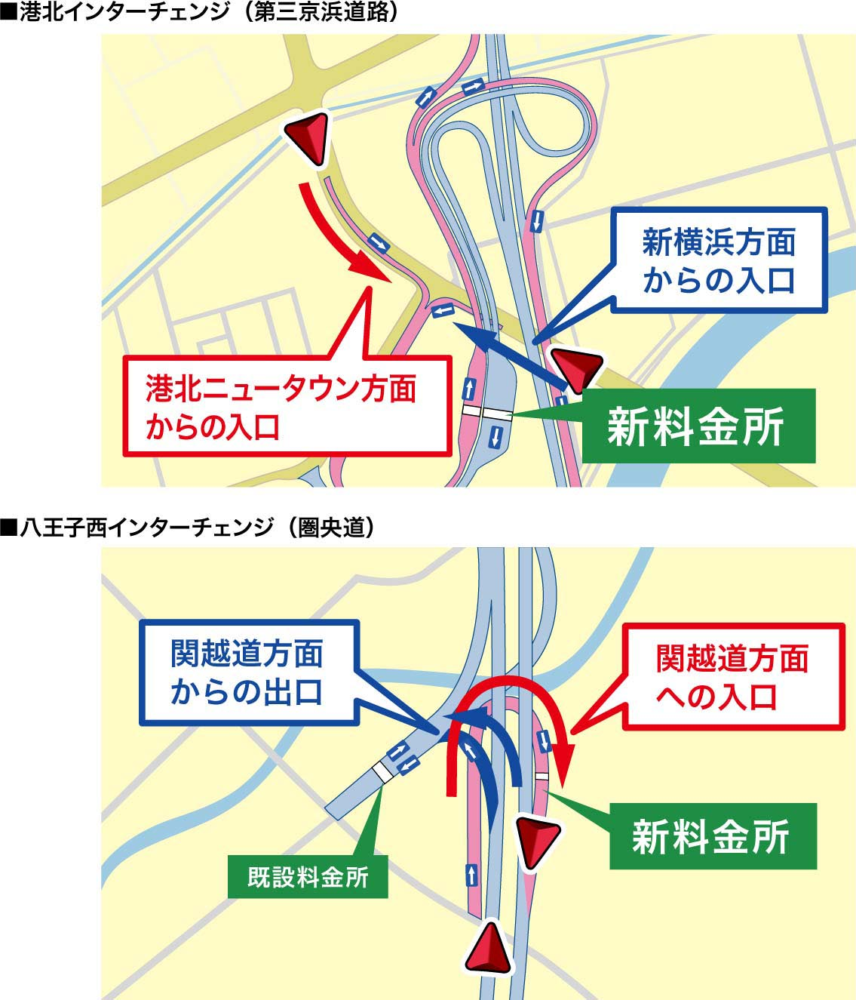

2017年地図データ春版を収録
- 2017年1月末までの地図データを採用しています。（一部道路、施設等のデータを除きます。）
- 新しい道路が反映されています。首都圏では、港北ICの新しい入口、八王子西SICの開設などを収録。全国的にも多くの開通・開設情報が収録されています。
- 住所登録データ 約3,921万件、施設（名称）検索データ 約640万件を収録しています。さらに２画面表示の際の分岐イラストも約10,000件と大幅に増加しました。
2017年度春版に収録された新規道路／施設（一例）
| 青森県 |
鰺ヶ沢道路 |
鰺ヶ沢町北浮田町〜つがる市木造越水 |
| 秋田県 |
鷹巣大館道路 |
鷹巣IC〜二井田真中IC |
| 秋田県 |
葛原バイパス |
十和田末広～大館市猿間地内 |
| 福島県 |
東北中央自動車道 |
福島JCT〜福島大笹生IC |
| 宮城県 |
三陸沿岸道路 |
三滝堂IC〜志津川IC |
| 長野県 |
替佐静間バイパス |
中野市替佐地区～北永江地区 |
| 三重県 |
新名神高速道路 |
四日市JCT〜新四日市JCT |
| 滋賀県 |
栗東水口道路 |
五軒茶屋ランプ |
| 和歌山県 |
京奈和自動車道 |
岩出根来IC～和歌山JCT |
| 京都府 |
鳥取宮津自動車道野田川大宮道路 |
与謝天橋立IC〜京丹後大宮IC |
| 愛媛県 |
松山外環状道路インター線 |
古川IC〜市坪IC |
2017年度春版に収録されたスマートIC（一例）
| 東京都 |
圏央道 |
八王子西スマートIC |
| 神奈川県 |
第三京浜道路 |
港北IC進入口 |
| 大分県 |
大分自動車道 |
由布岳スマートIC |
